substitude :s/shiyanlou/oeasy range:3,5s/shiyanlou/oeasy :%s/shiyanlou/oeasy flag:3,5s/shiyanlou/oeasy/g 多个替换:3,5s/shiyanlou/oeasy/gc 多个替换且逐个确认[abcd] [a-z][a-d] 等价于 [abcd][^abcd]abcd之外的任意字符. [^\n]( \n )以外，表示匹配任意一个字符\l [a-z]小写字母\L[^a-z]除小写字母外的其他字符\u[A-Z]大写字母\U[^A-Z]任意一个除大写字母外的其他字符\w[0-9A-Za-z_]任意一个字母、数字、下划线\W[^0-9A-Za-z_]任意一个字符除了字母、数字、下划线。\d[0-9]任意一个数字\D[^0-9]任意一个除数字外的其他字符\x[0-9A-Fa-f]任意一个十六进制数字\X[^0-9A-Fa-f]任意一个除十六进制数字外的其他字符\s分隔符空格 和 tab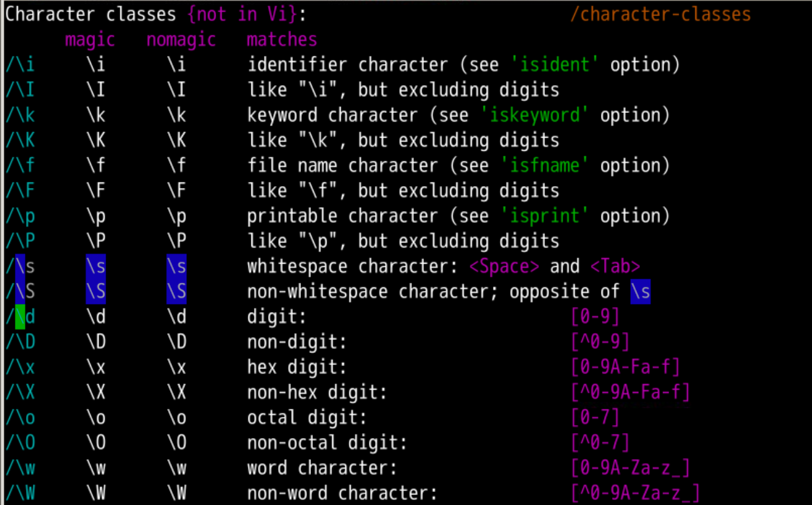
然后我们明确一下起止标记
^ 表示匹配 输入字符串的开始位置 (行首)。$ 表示匹配 输入字符串的结束位置 (行尾)。
-\< 表示匹配 单词词首。\> 表示匹配 单词词尾。:%s/four/4/g four替换为4fourty、fourteen 都匹配了:%s/\<four\>/4/gtwenty-fourtwenty-4:%s/^four$/4/g匹配独立的four这个单词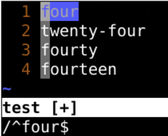
a开头d结尾的单词oeasy:%s/\<a.*d\>/oeasy/gadd、and 被替换band 不被替换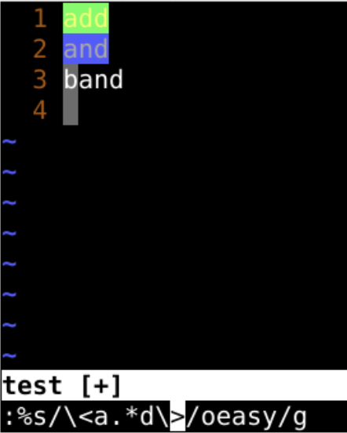
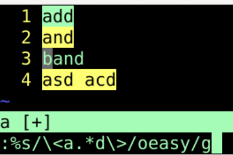
:%s/\<a.*d\>/oeasy/g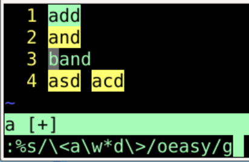
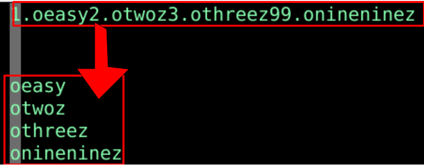
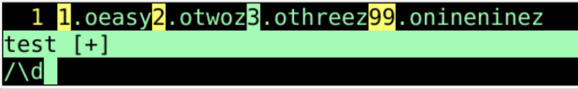
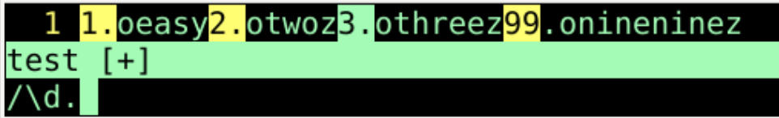
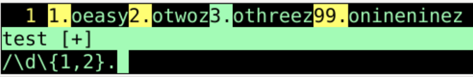
\d\{1,2}.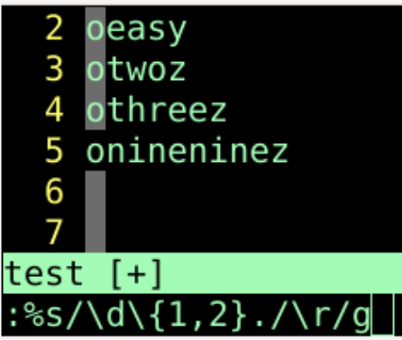
/^$^ 到结尾 $ 中间没东西%s/^$//这并不能删除行g命令:g/^$/d/^\s*$ 先找到匹配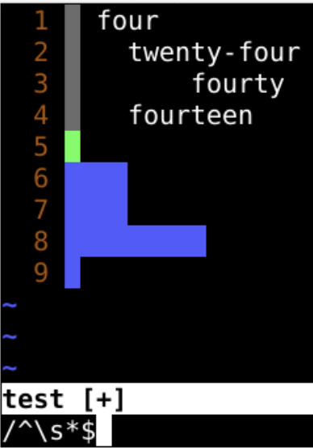
:%g/^\s*$/d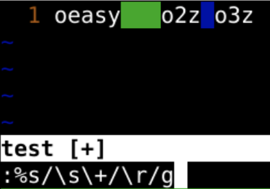
:%s/\s\+/\r/g%表示所有行s替换subtitute\s 空格和tab\+ 一个或一个以上\r 换行g 全局 global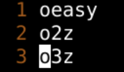
^\s*\s*$^\s*\|\s*$:%s/^\s*\|\s*$//g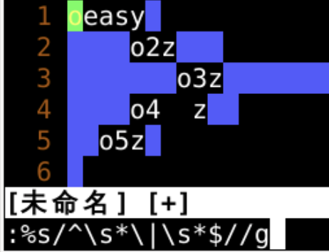
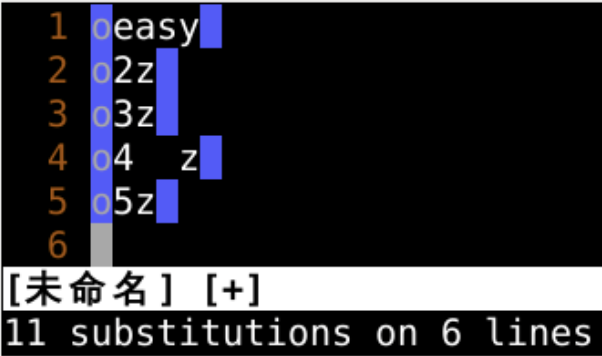
//开头的行/需要转义:%s/^\/\/.*$//g:g/^\/\/.*$/d:g/^\s*\/\/.*$/d\\ 前面有空格和tab的也删除了 :%s/\<a.*d\>/oeasy/g%s/^\/\/.*$/d:g/^\s*$//d :g/^\s*\/\/.*$/d